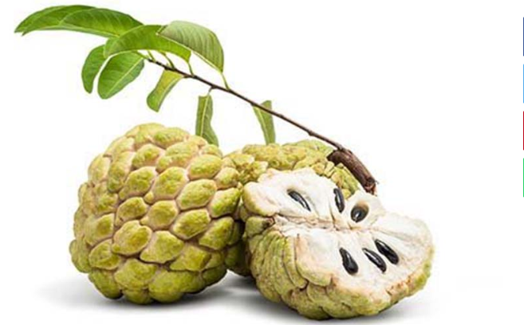

Srikaya

Jika kita mendengar nama Srikaya, kebanyakan dari kita yang mendengarnya akan terkonsentrasi atau mengingat buah.
Ya, srikaya adalah jenis buah yang disebut Annona Squamosa dalam bahasa Latin, di mana buah srikaya sehari-hari biasa disebut Buah Nona atau Mona.
Buah srikaya atau buah lalat adalah sejenis tanaman berbuah asli daerah tropis. Jika kita berada dalam klasifikasi ilmiah, buah srikaya ini juga merupakan buah dari genus Annona.
Buah Srikaya adalah buah yang memiliki bentuk tertentu dibandingkan dengan buah lain pada umumnya. Rasa konsumsi yang manis dan lezat membuatnya memiliki penggemar sendiri.
Kandungan Buah Srikaya
Setelah di atas, kita tahu isi dan manfaat dari kedua akar, kulit kayu, biji dan daun sriakaya. Kami sekarang memasukkan bagian konten dari buah srikaya. Kandungan buah srikaya, yaitu :
- Asam amino
- Gula buah
- Kalium
- Magnesium
- Niasin
- Sedangkan untuk buah srikaya yang muda mengandung tanin
Manfaat buah srikaya
1.Mengurangin Kolesterol Tinggi
Srikaya, yang mengandung banyak niacin, sehingga buahnya dapat mengurangi kadar kolesterol pada penderita kolesterol. Konsumsi buah ini secara teratur akan membantu mengurangi kadar kolesterol dalam tubuh manusia.
2.Sangat Baik Untuk Pencernaan
Buah Srikaya mengandung banyak serat, menjadikannya makanan konsumen yang ideal bagi orang yang menderita sembelit, karena serat ini akan memudahkan pencernaan pada manusia.
3.Baik Untuk Penderita Diabetes
Selain meningkatkan pencernaan, serat yang terkandung dalam gula dapat memperlambat laju penyerapan glukosa darah dalam tubuh manusia, sehingga dapat mencegah diabetes.
4.Srikaya Sebagai Obat Anti Diare
Buah srikaya yang masih muda bisa mengobati diare. Kandungan vitamin dan mineral yang terkandung dalam buah srikaya sangat efektif dalam membantu menyembuhkan diare.
Cara Penyajian tanaman srikaya ini kalian bisa membuatnya menjadi selai sebagai berikut :
|